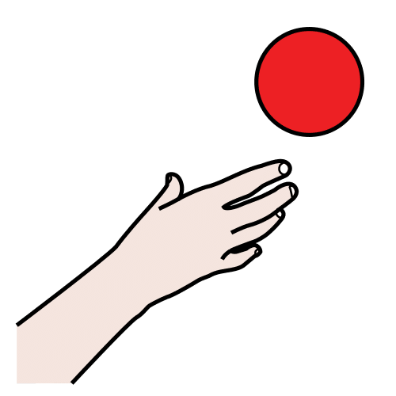

Para hablar conmigo
- Ponte a mi altura y di mi nombre.
- Señala los dibujos mientras hablas.
- Espera. A veces tardo en responder.
- Lo que señalo cuenta: respóndeme.
Llavero de comunicación · ideducando.es
Apoyo visual · Comunicación aumentativa
Un tablero para la clase y un llavero para llevar a todas partes.
Pictogramas: Sergio Palao. ARASAAC (Gobierno de Aragón). CC BY-NC-SA.
Licencia CC BY-NC-SA 4.0
ideducando.es
Nombre:
Pictogramas: Sergio Palao. Origen: ARASAAC (arasaac.org). Licencia CC BY-NC-SA. Propiedad: Gobierno de Aragón (España). Tablero: IdEducando, CC BY-NC-SA 4.0.
Nombre:
Casillas grandes para empezar o para quien señala con la mano entera. Los colores son los mismos que en el tablero de 45. Pictogramas: Sergio Palao. Origen: ARASAAC (arasaac.org). Licencia CC BY-NC-SA. Propiedad: Gobierno de Aragón.
Recorta por la línea de puntos, plastifica y perfora el círculo. Une las tarjetas con una anilla de 25 mm. Pictogramas: Sergio Palao. Origen: ARASAAC (arasaac.org). Licencia CC BY-NC-SA. Propiedad: Gobierno de Aragón.
La tarjeta «Para hablar conmigo» va la primera de la anilla: es para monitores de comedor y de patio, conserjes y cualquier adulto nuevo. En las tarjetas en blanco pega los pictogramas que tu alumno o alumna ya conoce.
Llavero de comunicación · ideducando.es
Llavero de comunicación · ideducando.es
Mi cole:
Mi clase:
Teléfono del cole:
Escribe solo esto. Nunca la dirección de casa.
Mi cole:
Mi clase:
Teléfono del cole:
Escribe solo esto. Nunca la dirección de casa.
Guía para docentes y otros adultos
Un niño o una niña aprende a hablar después de oír hablar a su alrededor durante miles de horas. Con un tablero pasa lo mismo: aprende a usarlo cuando ve a los adultos señalar en él mientras hablan. Esto se llama modelar, y es la base de la intervención con sistemas aumentativos y alternativos de comunicación (SAAC), las formas de comunicarse que se suman al habla o la sustituyen (Sennott, Light y McNaughton, 2016).
El tablero recoge vocabulario núcleo: las palabras que usamos a todas horas y en cualquier sitio, como «quiero», «más», «eso», «no» u «otro». En escolares que hablan inglés, unas 200 palabras suman cerca del 80 % de lo que dicen, y casi ninguna es un sustantivo (Boenisch y Soto, 2015). En español apenas hay estudios: Soto y Cooper (2021) proponen un vocabulario inicial de 218 palabras. Las listas núcleo dejan fuera palabras muy personales (Laubscher y Light, 2020): para ellas están el hueco en blanco y el llavero.
Señalar, esperar y responder acompañaban al modelado en los estudios con mejores resultados (O'Neill, Light y Pope, 2018).
| Momento | Lo que dices | Lo que señalas |
|---|---|---|
| Asamblea | «Hola a todos. ¿Quién falta hoy?» | ¿quién? |
| Almuerzo | «¿Quieres más? ¿Más agua?» | quieromásagua |
| Juego | «Ahora juego yo. Tú, espera.» | jugaryoesperar |
| Plástica | «Mira, es grande. ¿Quieres otro color?» | mirargrandeotro |
| Al terminar | «¿Ya está? Lo has hecho muy bien.» | ya estábien |
| Recoger | «Ponemos todo aquí.» | ponertodoaquí |
Siguiendo el Diseño Universal para el Aprendizaje (DUA), que propone varias formas de participar:
No. Las revisiones de estudios no han encontrado que los SAAC frenen el habla, y en muchos casos el habla mejora (Millar, Light y Schlosser, 2006; Schlosser y Wendt, 2008).
No hay requisitos previos. No hace falta leer, ni reconocer todos los pictogramas, ni «estar preparado»: se aprende usándolo (Romski y Sevcik, 2005).
La Convención sobre los derechos de las personas con discapacidad incluye los modos y formatos aumentativos y alternativos en su definición de comunicación (artículo 2) y pide a los Estados facilitar su aprendizaje en la escuela (artículo 24.3). España la ratificó en 2008 (BOE de 21 de abril de 2008). La Ley General de derechos de las personas con discapacidad cita los sistemas aumentativos y alternativos y los pictogramas entre los medios de accesibilidad cognitiva (Real Decreto Legislativo 1/2013, artículo 2.k). Y la Ley Orgánica de Educación encarga a las administraciones educativas poner los recursos que necesita el alumnado con necesidades específicas de apoyo educativo (artículos 71 y 72).
Cada semana o cada quincena, apunta qué palabras has modelado y cuáles ha señalado por su cuenta. Con estas notas verás qué palabras ya son suyas y cuáles conviene modelar más.
| Fecha | Palabras que he modelado | Palabras que ha señalado por su cuenta | Dónde y con quién |
|---|---|---|---|
Comunicación en el bolsillo: tablero y llavero de comunicación. IdEducando, octubre de 2026. Ficha y novedades: ideducando.es/material-gratuito/tablero-comunicacion-basico
Fuentes: Boenisch y Soto (2015), AAC, 31(1), 77-84; Soto y Cooper (2021), AAC, 37(1), 64-74; Laubscher y Light (2020), AAC, 36(1), 43-53; Sennott, Light y McNaughton (2016), Research and Practice for Persons with Severe Disabilities, 41(2), 101-115; O'Neill, Light y Pope (2018), Journal of Speech, Language, and Hearing Research, 61(7), 1743-1765; Light y otros (2019), AAC, 35(1), 42-55; Millar, Light y Schlosser (2006), JSLHR, 49(2), 248-264; Schlosser y Wendt (2008), American Journal of Speech-Language Pathology, 17(3), 212-230; Romski y Sevcik (2005), Infants & Young Children, 18(3), 174-185; Convención sobre los derechos de las personas con discapacidad (BOE de 21/04/2008); Real Decreto Legislativo 1/2013. AAC: revista Augmentative and Alternative Communication.
Pictogramas: «Los símbolos pictográficos utilizados son propiedad del Gobierno de Aragón y han sido creados por Sergio Palao para ARASAAC (https://arasaac.org), que los distribuye bajo Licencia Creative Commons BY-NC-SA». Si adaptas el material, mantén este texto. Con pictogramas de ARASAAC, el material no se puede vender.
Licencia CC BY-NC-SA 4.0: puedes copiarlo y adaptarlo citando a IdEducando, sin fines comerciales.
Para las familias
En clase usamos un tablero de comunicación. Tiene dibujos, que se llaman pictogramas, con las palabras que más usamos.
Sirve para que vuestro hijo o vuestra hija pueda decir lo que quiere, lo que no quiere y lo que siente. Cuanto más lo vea usar en casa, antes lo hará suyo.

quiero y más.¿Dejará de hablar? No. Usar el tablero no frena el habla. Muchas veces la ayuda.
¿Y si señala cualquier cosa? Respondedle como si lo hubiera dicho con palabras. Así aprende que señalar sirve para algo.
¿Lo tiene que usar siempre? Lo usa cuando lo necesita, igual que vosotros usáis el móvil para escribir un mensaje. Lo importante es que esté a mano.
Comunicación en el bolsillo. IdEducando, octubre de 2026. Licencia CC BY-NC-SA 4.0. Los símbolos pictográficos utilizados son propiedad del Gobierno de Aragón y han sido creados por Sergio Palao para ARASAAC (https://arasaac.org), que los distribuye bajo Licencia Creative Commons BY-NC-SA.